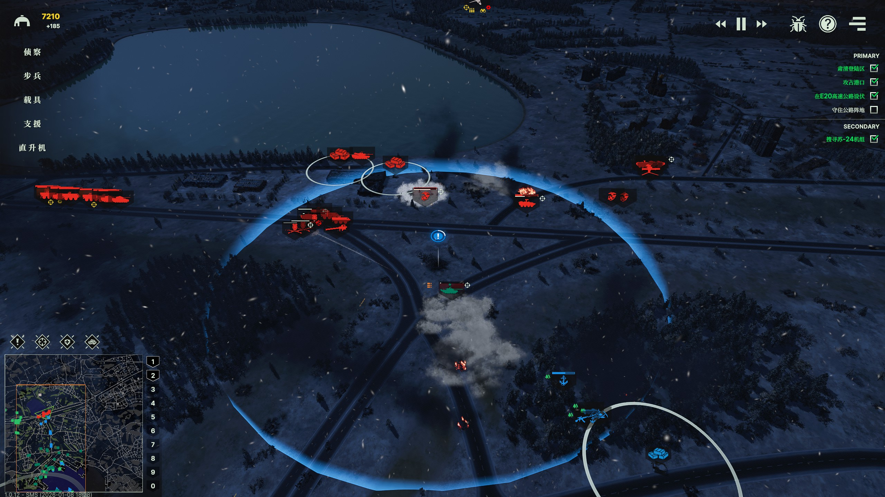
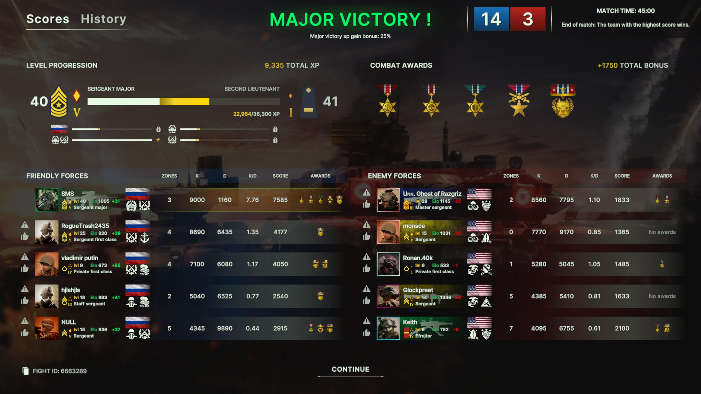

Broken Arrow¶
中文: 断箭.
卡组¶
卡组文件位于 %USERPROFILE%\AppData\LocalLow\SteelBalalaikaStudio\BrokenArrow\Decks.
防空压制¶
防空压制 (Suppression of Enemy Air Defenses, SEAD) 是指通过使用反辐射导弹 (Anti-Radiation Missile, ARM) 来摧毁或压制敌方防空雷达和导弹系统的战术.
以下是具备 SEAD 能力的战斗机:
- 美国: Prowler (x4), F-16CJ (x4), F-35A (x2), F-15EX (x2).
- 俄罗斯: Su-24MP (x3), Su-34 (x2), MiG-35 (x4), Su-57 (x4), Su-25 (x2).
其中 (xN) 表示最多可携带 N 枚 ARM.
常规操作是保持 "仅还击" 模式接近敌方防空单位, 随后切回主动攻击发射 ARM, 以压缩敌方反应时间并提高 ARM 的突防概率.
以下是具备 SEAD 能力的直升机:
- 美国: AH-1Z Viper (x2).
- 俄罗斯: Ka-52 Katran (x2).
以下作战单位应该设置编号, 便于快速选中:
- 远程火力: 快速为前线提供火力支援.
- 雷达防空: 便于在发现 SEAD-capable 战机时快速关闭雷达.
克制关系¶
flowchart TD
RECON["<b>侦察 Recon</b>"]:::recon
RECON -->|视野/引导| ARTY
subgraph INF["<b>步兵 Infantry</b>"]
AT_INF["反坦克步兵"]
AA_INF["防空兵\nMANPADS"]
class AT_INF,AA_INF infantry
end
subgraph VEH["<b>载具 Vehicles</b>"]
MBT["主战坦克\nMBT"]
IFV["步兵战车\nIFV"]
APC["装甲运兵车\nAPC"]
class MBT,IFV,APC vehicle
end
MBT -->|消灭| IFV
IFV -->|消灭| APC
MBT -->|消灭| SHORAD
VEH -->|消灭| INF
INF -->|阻止| VEH
subgraph SUP["<b>支援 Support</b>"]
ARTY["火炮"]
SHORAD["近程防空"]
HIMAD["中高空防空"]
class ARTY,SHORAD,HIMAD support
end
%% 防空
AA_INF -->|阻止| HELI
SHORAD -->|消灭| HELI
HIMAD -->|消灭| JET
HELI["<b>直升机 Helicopters</b>"]:::aircraft
HELI -->|消灭| MBT
HELI -->|消灭| INF
JET["<b>固定翼 Aircraft</b>"]:::aircraft
JET -->|消灭| VEH
JET -->|消灭| INF
%% SEAD
HELI -->|压制| SHORAD
JET -->|压制| HIMAD
classDef recon fill:#2a4d7e,stroke:#4a7dff,stroke-width:2px,color:#fff
classDef infantry fill:#2e7d32,stroke:#4caf50,stroke-width:2px,color:#fff
classDef support fill:#c62828,stroke:#ff5252,stroke-width:2px,color:#fff
classDef vehicle fill:#6a1b9a,stroke:#9c4dcc,stroke-width:2px,color:#fff
classDef aircraft fill:#ff8f00,stroke:#ffb74d,stroke-width:2px,color:#fff波罗的海战役¶
金牌要求¶
获取金牌的条件需且仅需满足金牌要求, 无需同时满足铜牌和银牌要求.
美军任务¶
| 任务 | 金牌要求 |
|---|---|
| 好戏上演 (Show Time) | • 在困难难度下完成任务. • 在 30 分钟内完成所有目标. |
| 和平捍卫者 (Peacekeeper) | • 在困难难度下完成任务. • 不要损失任何单位. |
| 空军基地惊天劫案 (Airbase Heist) | • 在困难难度下完成任务. • 在 30 分钟内完成任务. |
| 巨浪 (The Big Wave) | • 在困难难度下完成任务. • 在 10 分钟内占领堡垒. |
| 钢铁洪流 (Tracked and Furious) | • 在困难难度下完成任务. • 不要损失任何一辆车辆 (包括车队). |
| 夜幕主宰者 (We Own The Night) | • 在困难难度下完成任务. • 不要损失任何一架直升机. |
| 吸血鬼! (Vampires!) | • 在困难难度下完成任务. • 不要损失任何一架飞机 (包括直升机). |
| 铁雨天降 (Heavy Rain) | • 在困难难度下完成任务. • 不要让任何单位被伊斯坎德尔 (Iskander) 导弹击毁. |
| 狩猎季节 (Hunting Season) | • 在困难难度下完成任务. • 消灭防空设施且不损失直升机. |
| 好友相助 (With a little help from our friends) | • 在困难难度下完成任务. • 不使用豹式坦克 (Leopards) 赢得任务. |
| 断箭 (Broken Arrow) | • 在困难难度下完成任务. • 遵循本内特 (Bennet) 的计划. |
俄军任务¶
| 任务 | 金牌要求 |
|---|---|
| 请出示证件 (Papers Please) | • 在困难难度下完成任务. • 使用最少数量的乘员组. |
| 停电 (Blackout) | • 在困难难度下完成任务. • 撤离全部幸存步兵与车辆. |
| 冷港行动 (Operation Cold Harbour) | • 在困难难度下完成任务. • 不借助巴塔林 (Batalin), 独自占领港口全部目标. |
| 自助服务 (Self Service) | • 在困难难度下完成任务. • 在 45 分钟内完成任务. |
| 禁航水域 (Forbidden Waters) | • 在困难难度下完成任务. • 用 SSO 或 Spetsnaz VMF 击杀 50 个敌方单位. |
| 搜索与救援 (Search & Rescue) | • 在困难难度下完成任务. • 在 40 分钟内占领城市. |
| 舍我其谁 (The Ride of the VDV) | • 在困难难度下完成任务. • 不使用 BMD-4M 或 Sprut-SD. |
| 归宿之路 (Road to Fiddler's Green) | • 在困难难度下完成任务. • 不向上校请求任何援助. |
金牌技巧¶
善用单人模式下的时间速率调节功能, 在战况较为激烈时进行微操.
冷港行动
- 可以在 "夺取港口登陆场" 时提前将部分 PDSS 部署在码头左侧, 便于后续快速占领左侧区域. 进入下一阶段后使用直升机快速清剿左侧区域的敌人, 然后占领.
- 占领左侧区域后, 巴塔林并不会主动占领右侧区域, 因此后续一定能达成 "独自占领港口全部目标" 这一条件.
- 无需立即占领路口, 应先花时间仔细部署伏击圈, 守住该路口是该任务最难的部分.
- 任务是坚守路口 10 分钟, 后期可以打伏击, 并使用烟雾弹拖延敌人的进攻.
-
巴塔林支援路口时, 其所乘坐的 T-90AK Batalin 是无敌的, 可以吸引大量火力, 然后将其余兵力隐藏在树林中.

禁航水域
- 在 SSO 或 Spetsnaz VMF 完成击杀时, 屏幕左侧会显示喇叭图标和当前击杀数.
- 可以依靠 Spetsnaz VMF 或其他侦察单位提供视野, 然后通过 SSO 的 Kornet-M 从远距离打击敌方人员和载具单位.
- 如需轻松完成 50 击杀的目标, 需要让其他单位在合适的时候启用 "仅还击", 避免直接击杀敌军单位.
舍我其谁
- 集中兵力防御单个位置, 所有位置都被敌方占领才会判定为任务失败.
归宿之路
- 任务前期德米多夫上校会询问玩家需要何种增援, 选择不需要任何增援即可.
铁雨天降
- 可以将开局带步兵的载具直接 RTB (防止移速较慢的步兵被弹道导弹击杀), 然后仅使用坦克进行突击.
- 第二个导弹连防空较为脆弱, 可以直接使用弹道导弹摧毁.
米勒声称一个 "伊斯坎德尔" 导弹连配有 6 辆发射车 (Transporter Erector Launcher, TEL), 实际为 2 辆.
吸血鬼!
时刻注意弹药量/油量以及敌占区的地面防空.
- 击落直升机后会有多架 Su-30SM 同时出动, 此时船已快靠港, 可以且战且退.
- 经测试, 直升机损失也会导致条件不满足.
钢铁洪流
- 需确保己方任何车辆以及最后的车队不能有任何损失.
- 占领 D 点后, C 点会被攻击.
- 占领 E 点后, C 和 E 点会被攻击.
人物关系¶
美军¶
graph TD
Bennet["<b>将军 (Bennet)</b><br/>陆军中将 / 最高指挥"]
Williams["<b>威廉姆斯 (Williams)</b><br/>少校 → 中校 / 前线指挥"]
Miller["<b>米勒 (Miller)</b><br/>律师/顾问 / CIA 权力夺取者"]
Player["<b>指挥官 (Commander)</b><br/>玩家"]
Bennet -->|信任与战术指令| Williams
Bennet -->|对立 昔日友谊破裂| Miller
Williams -->|执行任务 建立信任| Player
Miller -->|权力夺取 国家安全命令| Bennet
Miller -->|提拔与胁迫| Williams
Miller -->|强制指挥| Player
Williams -. "共同反抗 道德同盟" .- Player
style Miller fill:#F5A623,color:#000,stroke:#D97C1A,stroke-width:3px
style Bennet fill:#4A90E2,color:#000,stroke:#2E5C8A,stroke-width:3px
style Williams fill:#7ED321,color:#000,stroke:#5BA80E,stroke-width:3px
style Player fill:#BD10E0,color:#000,stroke:#8B06A0,stroke-width:3px俄军¶
graph TD
Lena["<b>莱娜 (Lena)</b><br/>SVR 特工 / 指挥官"]
Demidov["<b>德米多夫 (Demidov)</b><br/>资深上校 / 战争英雄 → 冒名顶替者"]
Batalin["<b>巴塔林 (Batalin)</b><br/>陆军上尉 / 崇拜者"]
Player["<b>指挥官 (Commander)</b><br/>玩家"]
Lena -- "指挥与监视" --> Demidov
Lena -- "利用与诱导" --> Batalin
Demidov -- "直接领导" --> Player
Demidov -- "指导与保护" --> Batalin
Batalin -- "仰慕与服从" --> Demidov
Batalin -. "竞争合作" .- Player
Lena -- "揭露/报复" --> Demidov
style Lena fill:#F5A623,color:#000,stroke:#D97C1A,stroke-width:3px
style Demidov fill:#4A90E2,color:#000,stroke:#2E5C8A,stroke-width:3px
style Batalin fill:#7ED321,color:#000,stroke:#5BA80E,stroke-width:3px
style Player fill:#BD10E0,color:#000,stroke:#8B06A0,stroke-width:3px教程¶
- For those who aren't military geeks: 介绍了常见的概念和术语, 可以帮助快速入门.
Pro Tips¶
-
使用 LoS 工具观察敌方单位视野.
可以从敌方单位的视野盲区快速推进.
-
使用 Q 移动.
在攻击敌方的角度比较刁钻时, 可以使用 Q 经过可见区域, 我方单位会自动停下并攻击, 避免错位攻击角度.
-
判断补给位置.
TODO
侦察¶
侦察单位是最容易被新手忽视的兵种, 但确实最重要的之一.
- 侦察兵.
- 低空无人机 (Low-altitude UAV).
-
高空无人机 (High-altitude UAV).
-
激光制导.
树林: 隐蔽. 建筑物: 隐蔽+防御加成.
TODO
车辆¶
TODO
机动¶
TODO: 履带和轮式的区别
装甲¶
TODO
反坦克小组¶
发现敌方 ATGM 来袭时, 应立即驶入建筑物后或释放烟幕, 对方失去 LoS 后其半制导弹药将失效.
反坦克小组通常具有较高的隐蔽基础值 (1.75), 且部署在视野开阔的高层建筑内 (3.5), 以便能利用隐蔽和射程优势, 阻止坦克推进.
以 TOW-2A 为例, 下表是不同距离下导弹击中目标的时间, 也是被攻击载具的反应时间:
| 距离 | 飞行时间 |
|---|---|
| 200m | 0.91 |
| 800m | 2.83s |
| 1000m | 3.34s |
| 1600m | 4.78s |
以 M1A2 SEP v3 为例:
- 其 M2 Browning 重机枪射程为 800m, 能在 1-2s 内瞄准并开火压制目标.
- 主炮射程为 1.4km, 对方射程为 1.6km. 如果有敌方单位视野, 瞄准+开火时间长达 3-4 秒.
在通过 LoS 工具确定敌方单位所在建筑物视野后, 利用机动性快速接近建筑物, 使其进入机枪的射程.
若确定对方反坦克小组无补给后 (如已经进行了一轮火炮打击), 也可以在远处诱导对方攻击, 消耗其弹药 (美军 6 次, 俄军 4 次).
根据 ATGM 飞行方向反推对方反坦克单位具体位置, 然后使用火炮打击其最后位置.
步兵¶
TODO
直升机¶
TODO
固定翼¶
TODO
术语表¶
TODO: 完善下面表格
| 术语 | 描述 |
|---|---|
| 步兵战车 (Infantry Fighting Vehicle, IFV) | 拥有重型装甲和武器, 用于运输步兵的车辆. 比 APC 装备更好, 但不如坦克. IFV 的载员舱通常较小 |
| 装甲运兵车 (Armored personnel carrier, APC) | 装备轻型装甲和武器, 用于运输步兵的车辆. 比无装甲运输车防护更好, 但火力不如 IFV |
| 水陆两栖 (Amphibious) | 部分步兵和车辆具有 "两栖" 属性, 意味着它们可以直接跨越水域, 但在水上移动速度较慢. |
| 术语 | 描述 |
|---|---|
| 主动防护系统 (Active Protection System, APS) | 安装在装甲车辆上的装置, 通过发射拦截弹来拦截射向车辆的反坦克弹药. |
| 爆炸反应装甲 (Explosive reactive armor, ERA) | 能增加装甲车辆对 HE 弹的防御. |
| 术语 | 描述 |
|---|---|
| 火炮 (Artillery) | 小到迫击炮, 大到弹道导弹. 由于其是曲射火力, 非常适合从后方火力支援前线. |
| 术语 | 描述 |
|---|---|
| 高爆弹 (High Explosive, HE) | 伤害一般取决于口径. |
| 动能弹 (Kinetic Energy, KE) | 绝大多数穿甲弹属于 KE, 伤害随距离衰减. |
| 反坦克导弹 (Anti-tank guided missile, ATGM) | 通常比火箭弹射程更远, 威力更大, 但装填时间更长, 且通常要求发射单位保持静止. |
| 弹道导弹 (Ballistic missile) | 垂直向上发射, 然后从天而降击中目标. |
| 巡航导弹 (Cruise missile) | 水平飞行, 具有较低的飞行高度. |
| 集束炸弹 (Cluster munition) | 爆炸半径大, 对轻装甲车辆极其有效, 对步兵伤害适中, 对坦克等重装甲车辆几乎无效. |
| 反导拦截弹 (Anti-ballistic missile, ABM) | 用于拦截敌方弹道导弹. |
| 术语 | 描述 |
|---|---|
| 反坦克 (Anti-tank, AT) | |
| C-RAM (Counter Rocket, Artillery, and Mortar, C-RAM) | 拦截火箭弹, 导弹和迫击炮弹. 断箭中只能拦截导弹. |
| 多管火箭系统 (Multiple launch rocket system, MLRS) |
| 术语 | 描述 |
|---|---|
| 激光制导 (Laser-guided) |
| 术语 | 描述 |
|---|---|
| 视线 (Line of Sight, LOS) | 指单位能够直接观察到的区域, 影响其攻击和侦察能力. 即使有共享视野, 直射火力也需要 LoS 才能攻击目标 |
光荣战绩¶

在使用全局最少经济 (5850 pts) 和部署次数 (52x) 的情况下, 获得全局最高的击杀数 (9000)/分数 (9335) 和最少的伤亡数 (1160).
资源¶
- https://barmory.net: 查询战绩和单位数据.
- https://ba-hub.net: 查询单位数据.